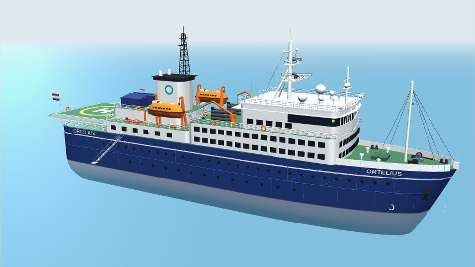
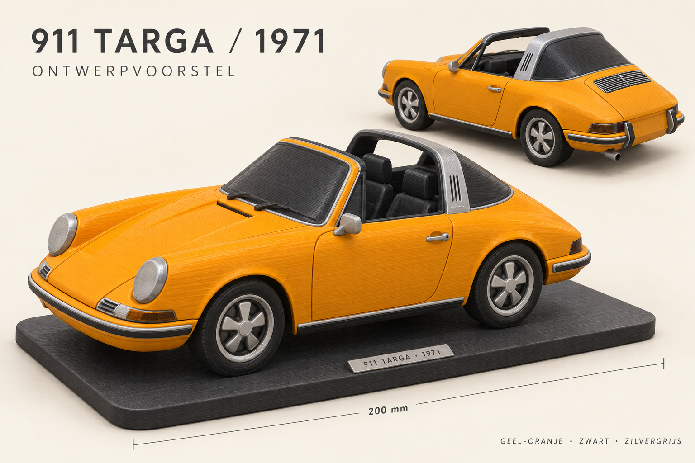
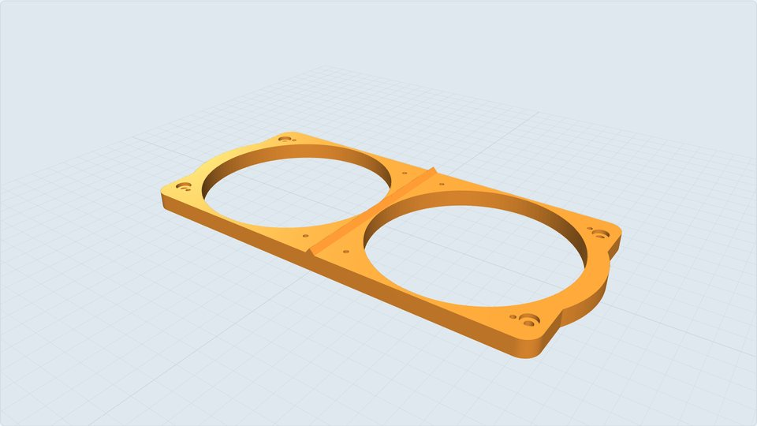
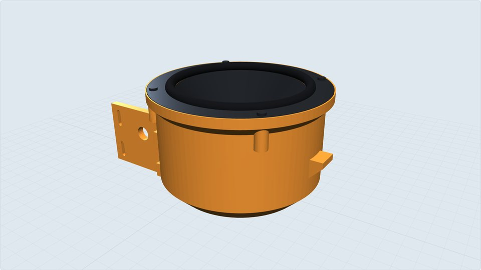
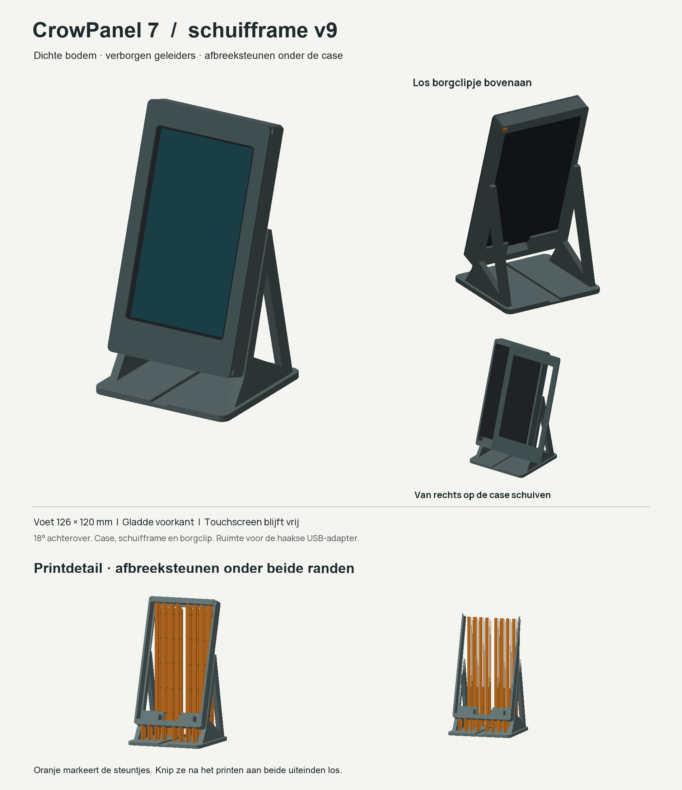
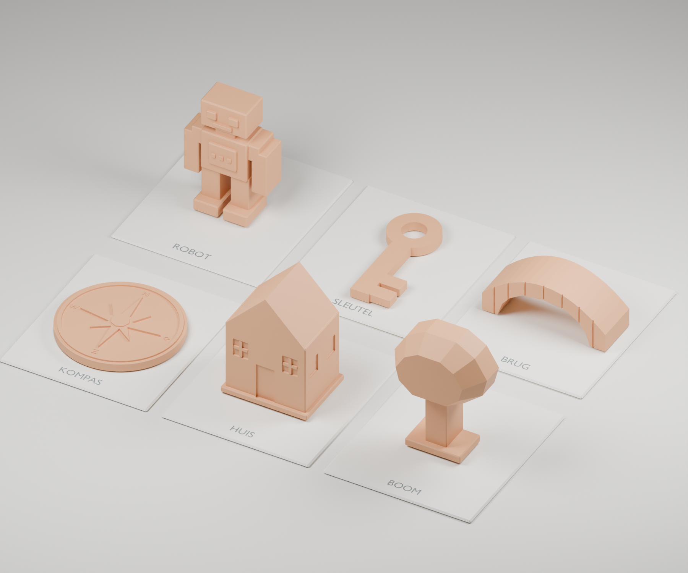
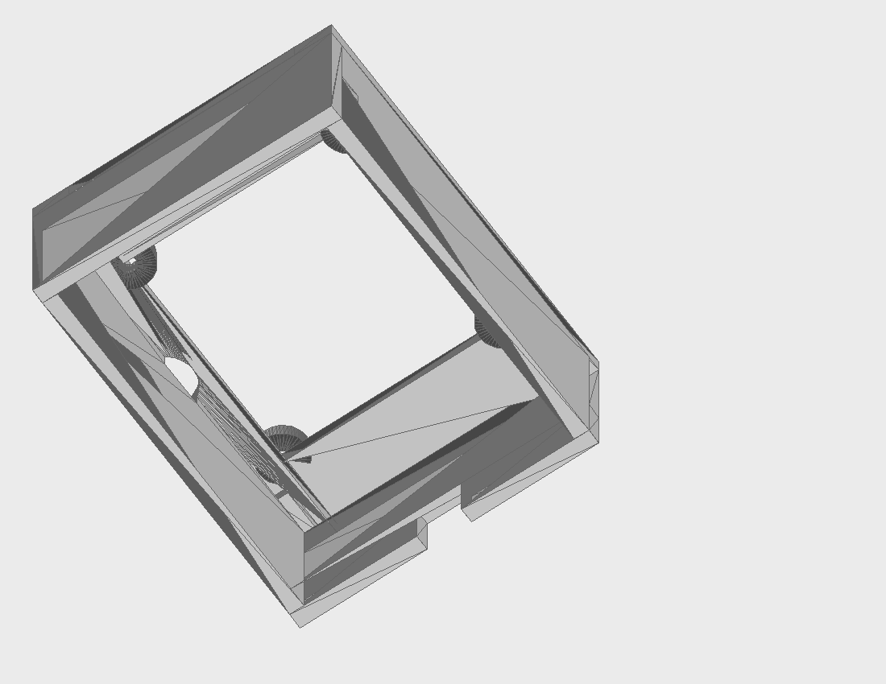

Ortelius RC
Poolexpeditieschip van Oceanwide Expeditions uit Vlissingen. Draaibaar conceptmodel met helidek, A-davits en printnaden, vergeleken met foto's.
3D-ontwerpen en printprojecten. Bekijk draaibare modellen, referenties en ontwerpkeuzes; de bronbestanden en documentatie staan in de repository.

Poolexpeditieschip van Oceanwide Expeditions uit Vlissingen. Draaibaar conceptmodel met helidek, A-davits en printnaden, vergeleken met foto's.
Afneembare bovenbouw voor een bestaande RC-romp, gereconstrueerd uit foto's en metingen. Met parametrische CAD, handleiding en pasproef.

Het oorspronkelijke Targa-voorstel voor een decoratief model van circa 20 cm, met eigen referentiefoto’s en ontwerpkeuzes.

Adapterplaat voor twee Audison APX 4 (10 cm coaxiaal) in het dashboard, met verzonken bevestiging en middenrib.

Geprinte cup voor een Visaton W 100 X (10 cm woofer) onder het dashboard, met montageplaat voor de bestaande Porsche-gaten.

Bureaustandaard met schuifframe voor het ELECROW CrowPanel Advance 7.0 ESP32-S3-touchdisplay (DIS02170A).

Bureaustandaard voor het ELECROW CrowPanel Advance 5.0 HMI ESP32-S3 IPS-touchdisplay (800 × 480), met de zwarte fabrieksplaten gemonteerd.

Een printcollectie met een robot, sleutel, boogbrug, kompas, huis en boom met takken. Elk model is maximaal 8 cm in zijn grootste maat.

Montageplaat voor de bediening van een Truma Therme. Versie 17 heeft een halfronde kabeluitsparing aan de zijde tegenover de knop.